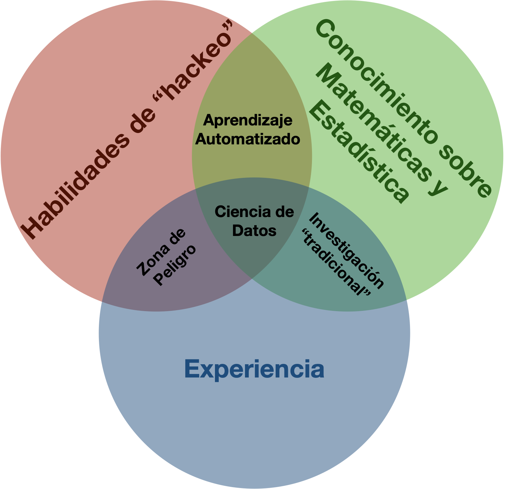

1 Ciencia de datos y biología
¡Hola! En esta primera clase del curso Bioestadística Aplicada con R y RStudio abriremos con la relación emergente entre la biología y la ciencia de datos.
Para comenzar, hablaremos un poco sobre lo que conocemos como estadística. El origen de esta disciplina se encuentra en la necesidad de los gobiernos de conocer cuál es el estado de su población, de ahí su raíz etimológica “relativo al Estado”. Sin embargo, en la actualidad, existen diversas definiciones y opiniones sobre lo que representa. Hay quienes mencionan que es la primera de las ciencias inexactas, mientras otras personas la consideran como la ciencia que nos permite cambiar nuestras ideas ante la incertidumbre. Si bien es cierto que estas visiones son en apariencia muy diferentes, ambas son perspectivas bastante válidas: la primera hace referencia a la relativa facilidad con la que se pueden manipular los datos o las pruebas (intencionalmente o no) para llegar al resultado que nosotros deseemos y la segunda a que nos permite tomar decisiones aún sin conocer en su totalidad un fenómeno. Si deseas leer sobre algunos mitos y realidades de la estadística, sigue este enlace.
Una definición más formal es la de la Real Academia de la Lengua Española: “Rama de la matemática que utiliza grandes conjuntos de datos numéricos para obtener inferencias basadas en el cálculo de probabilidades”. De esta definición podemos retomar algunas ideas claves: la primera es que es una rama de la matemática, por lo cual nuestra resolución de problemas debe basarse en un razonamiento lógico bajo la cobertura de las matemáticas, por lo que los procedimientos y resultados deben de ser expresados sin ambigüedades. La siguiente es que requiere de grandes conjuntos de datos, lo cual hace referencia a un tema que será abordado más adelante en el curso: la representatividad. Por último, podemos también reconocer su objetivo, el cual es permitirnos obtener conclusiones a partir de este conjunto de datos. A partir de esta definición podemos considerar a la bioestadística como la aplicación de la estadística a problemas biológicos, desde la estimación del tamaño poblacional de una especie, comparaciones de tallas entre sitios de muestreo, modelar el crecimiento corporal, entre muchas otras.
Debido a que la bioestadística está formada por una gran cantidad de procedimientos, muchos de ellos específicos a áreas particulares del conocimiento, en este curso abordaremos los fundamentos básicos de la estadística y técnicas de uso general.
Llegados a este punto, quiero introducir otro concepto: la ciencia de datos. En pocas palabras, esta estudia los métodos para extraer información sobre los datos y, en última instancia, facilitar la toma de decisiones. Sus objetivos son i) describir los datos, comparar entre grupos/poblaciones/clases, ordenar o clasificar observaciones y, en última instancia, predecir un resultado futuro a partir de los datos con las que se cuenta.
Al igual que con la definición de estadística, existen distintas definiciones y visiones, pero por el momento analicemos este diagrama que nos habla sobre las habilidades de un individuo realizando un procedimiento a sus datos y cuál sería el resultado:

Consideremos las habilidades de hackeo como habilidades de programación y el conocimiento técnico necesario para la aplicación de distintas técnicas de análisis de datos, a la experiencia como el conocimiento que el individuo tenga sobre el fenómeno que está analizando y al conocimiento sobre matemáticas y estadística como el conocimiento teórico sobre las técnicas que está aplicando.
En la intersección de las habilidades de hackeo y la experiencia se encuentra una “zona de peligro”, la cual también podemos definir como el área de la “caja negra”, es decir, el área en la que se aplican pruebas y métodos sin conocer sus fundamentos y las conclusiones o inferencias están en función de la experiencia y los prejuicios de quien las realice, sin considerar su pertinencia.
Por otra parte, en la intersección de la experiencia y el conocimiento de estadística se encuentra la investigación tradicional; es decir, existe un conocimiento teórico sobre las pruebas que se están aplicando y la experiencia para poder realizar inferencias sobre los datos considerando las limitaciones, fortalezas y debilidades de las técnicas; sin embargo, la visión sobre el problema se encuentra normalmente limitada a las pruebas tradicionales, lo cual a su vez limita el tipo de análisis y preguntas que se puedan resolver.
En la intersección de las habilidades de hackeo y el conocimiento sobre estadística se encuentra la disciplina del “aprendizaje automatizado”, algo que discutiremos más profundamente en la sección de Técnicas Multivariadas, pero que hace referencia al extraer relaciones entre los datos de manera eficiente, independientemente de si estas relaciones son causales o no.
Finalmente, en el centro, recibiendo entradas de las tres áres encontramos a la ciencia de datos.
Tomando esto en consideración, te propongo hacer un ejercicio de reflexión sobre la pertinencia de aproximarnos a los problemas biológicos de una manera más flexible, eficiente, informada y que considere también la experiencia del investigador, más allá del modo tradicional e inamovible que nos ha llevado a pensar de manera incorrecta que la falta de significancia estadística es falta de significancia biológica o viceversa. ¿Es esto un problema muy grave? Esa pregunta la dejaremos para un tema donde es más adecuado abordarla: pruebas de hipótesis, en especial al hablar sobre los usos y abusos del famosísimo (¿infame?) valor de p.
Con esta idea terminamos la primera clase del curso. Nos vemos en la siguiente para familiarizarnos con RStudio y cómo elaborar reportes utilizando Quarto.